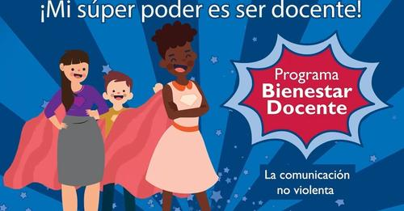
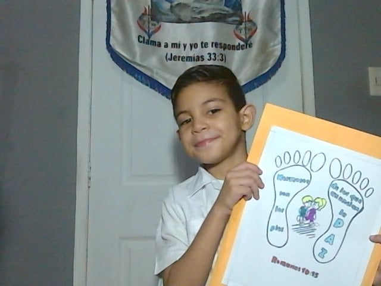
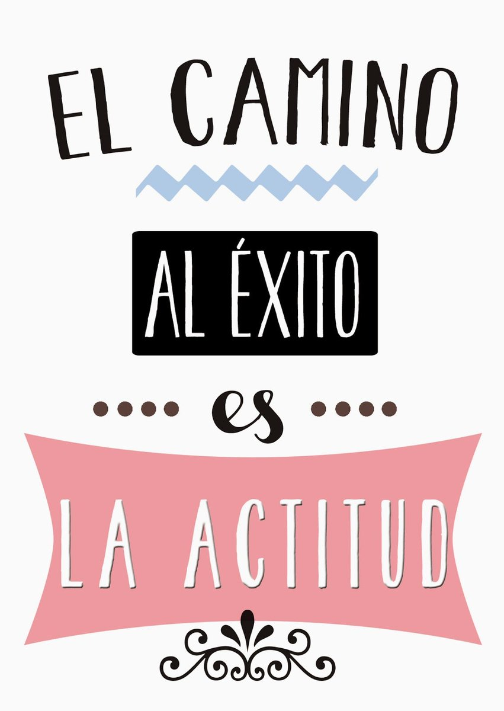

Programa 1: Programa Bienestar del Docente
El programa de bienestar del docente es una iniciativa crucial que busca apoyar y mejorar la calidad de vida de los educadores. Diseñado con el objetivo de atender las necesidades físicas, emocionales y profesionales de los maestros, este programa ofrece recursos y herramientas para fomentar su bienestar integral. Desde asesoramiento emocional hasta actividades de desarrollo profesional, el programa de bienestar del docente se centra en promover la salud mental, el equilibrio laboral y la capacitación continua para fortalecer y respaldar a aquellos que dedican sus vidas a la educación
Programa 2: Inteligencia Emocional
La inteligencia emocional es un componente fundamental en nuestras vidas, ya que influye en cómo comprendemos, gestionamos y respondemos a nuestras emociones y a las de los demás. Esta capacidad nos permite navegar por situaciones desafiantes, fortalecer relaciones interpersonales y tomar decisiones más conscientes. Al desarrollar la inteligencia emocional, exploramos nuestra propia esencia y cultivamos habilidades para enfrentar el mundo con empatía, autocontrol y una mayor comprensión de nuestras emociones, lo cual impacta positivamente en nuestra vida personal, académica y profesional.
Programa 3:Tu actitud lo es todo
¡Totalmente de acuerdo! La actitud que mantenemos frente a la vida puede influir enormemente en nuestras experiencias y en cómo enfrentamos los desafíos. Una actitud positiva y proactiva puede ser un motor poderoso para superar obstáculos, mantener la motivación y encontrar soluciones creativas a los problemas. Además, una actitud positiva puede impactar en cómo nos relacionamos con los demás, generando un ambiente más colaborativo y constructivo. Es impresionante cómo algo tan aparentemente simple como nuestra actitud puede tener un efecto tan significativo en nuestras vidas.
Programa 4: Actitud Positiva
Una actitud positiva es una mentalidad optimista y proactiva que se enfoca en ver lo mejor en situaciones y personas. Es el impulso que nos permite enfrentar desafíos con esperanza, buscar soluciones y mantener una perspectiva constructiva para alcanzar metas y disfrutar la vida plenamente.